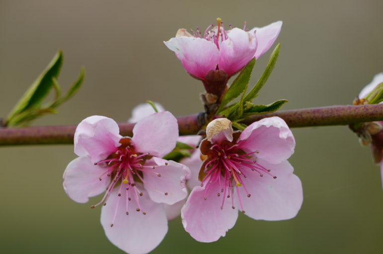
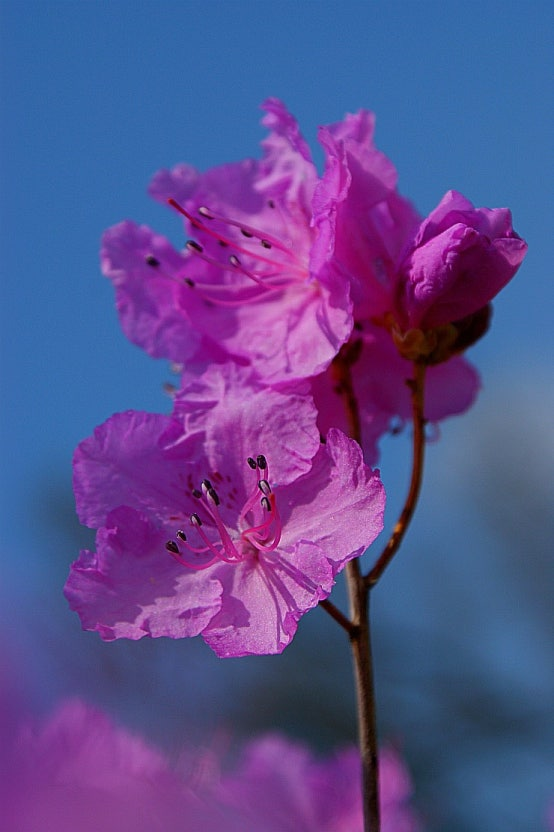

「고향의 봄」은 어르신들께서 어린 시절부터 늘 들어오신 친숙한 동요입니다. 함께 부르는 것만으로도 잊고 지내시던 옛 기억과 정서가 자연스럽게 떠오릅니다.
이 프로그램은 세 가지 영역을 동시에 자극합니다.
준비물은 아주 간단합니다. 가위·풀은 필요하지 않습니다.
본 활동에 들어가기 전, 네 단계로 어르신과 호흡을 맞춥니다. 천천히, 따뜻하게, 정답을 묻지 않는 분위기로.
오늘의 계절과 날짜를 자연스럽게 알려드리며 인사합니다.
오늘 함께 부를 노래 「고향의 봄」을 부드럽게 꺼내 봅니다.
진행자가 한 줄씩 먼저 부르고, 어르신이 따라 부르시도록 합니다.
어르신의 어린 시절을 부드럽게 여쭤봅니다. 천천히 경청하시면 됩니다.
본 활동은 가사 읽기 → 꽃 이름 맞히기 → 빈칸 채우기 → 시화 색칠 네 단계로 진행됩니다.
큰 글씨로 인쇄된 가사 인쇄지를 보시며 천천히 함께 소리 내어 읽습니다. 시각과 언어가 동시에 자극됩니다.
세 가지 꽃 사진을 한 장씩 보여드리며 여쭙니다 — "이건 무슨 꽃일까요?"


다섯 개 빈칸이 있는 인쇄지를 드리고, 어르신이 직접 연필로 적어 보시도록 합니다.
나의 살던 고향은 꽃 피는 산골
복숭아꽃 살구꽃 아기 진달래
울긋불긋 꽃 대궐 차린 동네
그 속에서 놀던 때가 그립습니다
— 빈칸 5개 (정답)
가사와 풍경이 한 장에 인쇄된 시화를 색칠하실 차례입니다.
시작과 끝이 같은 노래로 이어지면 프로그램이 자연스럽게 마무리됩니다. 짧지만 따뜻하게.
완성한 후에는 박수를 쳐 주세요. 칭찬과 격려는 자신감을 크게 높여 드립니다.
도입 때 부른 노래 1절을 한 번 더 함께 부릅니다. 시작과 끝이 같은 노래로 이어지면 마음에 잔잔한 여운이 남습니다.
수고하신 어르신께 감사의 마음을 전하고, 다음 회차에 대한 기대감을 담아 인사로 마칩니다.
진행 중에 꼭 기억해 주실 다섯 가지입니다. 정확함보다 함께 즐기는 마음이 우선이에요.
진행에 필요한 인쇄용 자료 3종과 교육 영상입니다. 출력해서 어르신께 사용하시면 됩니다.
함께 부른 노래는
어르신의 마음에 오래 남습니다 🌸
실로암방문요양지원센터 · 요양보호사 교육